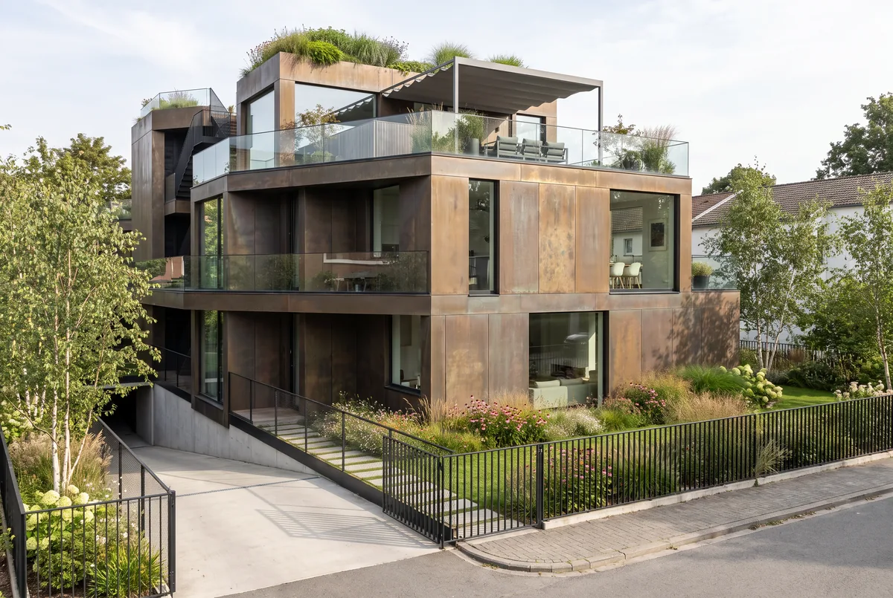
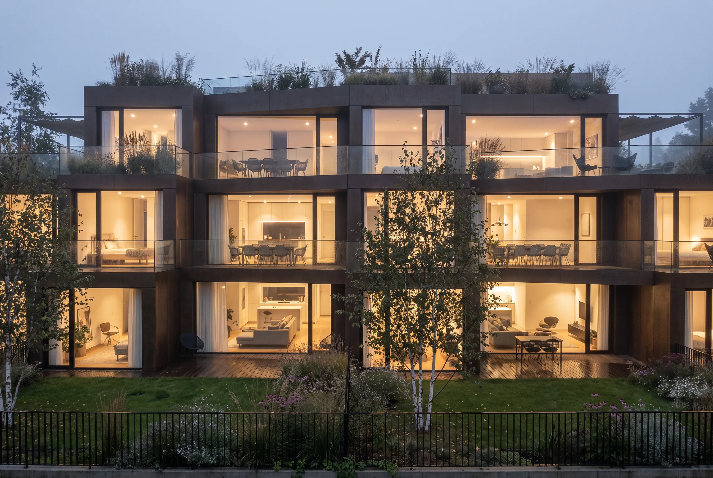

Energie
- Kaskade von Luft-Wasser-Wärmepumpen
- Photovoltaikanlage auf dem Dach mit Batteriespeicher
- Fußbodenheizung und -kühlung
- Kein Gasanschluss

Vorverkauf gestartet · Baugenehmigung beantragt
Acht Wohnungen, acht Terrassen und Gärten. Ein Haus in einem ruhigen Teil von Modřany, in dem man drinnen wie draußen lebt.
Visualisierung · JA Architekti
01 Das Haus
Drei Geschosse mit zurückgestaffelten Terrassen, begrünte Dächer und eine Fassade aus patiniertem Blech, die ihre Farbe mit dem Licht wechselt.





Visualisierungen JA Architekti. Die Inneneinrichtung ist unverbindlich.
Die Erdgeschosswohnungen haben einen eigenen Garten, die oberen Geschosse Terrassen von 25 bis 104 m². Holzdeck, begrünte Dächer und Glasbrüstungen. Sie werden mehr Zeit draußen verbringen, als Sie dachten.
Die Fassade aus Blechpaneelen mit sichtbaren Fugen wechselt im Lauf des Tages die Farbe. Innen Sichtbeton, dreischichtige Holzböden und Mineralspachtel. Nichts, was man in ein paar Jahren erneuern müsste.
Die Wohnungen werden über offene Laubengänge auf der Nordseite erschlossen. Wohnräume und Terrassen sind nach Süden, zum Garten, ausgerichtet. Zwischen den Wohnungen liegt eine Stahlbetonwand, die Nachbarn hört man nicht.
02 Wohnungen
Frei Reserviert Verkauft

Fahren Sie mit der Maus über eine WohnungFreiReserviertVerkauftKlicken Sie für Wohnungsdetail und Grundriss
Grundriss aus der Projektplanung (12/2025). Flächen und Grundrisse laut Projekt; verbindlich sind die Angaben der Teilungserklärung.
| Whg. | Geschoss | Grundriss | Fläche | Terrasse | Gesamt | Preis | Status | Detail |
|---|
03 Preise
Wir verkaufen die Wohnungen während des Genehmigungsverfahrens. Wer sich jetzt entscheidet, erhält je nach Höhe der Anzahlung einen Rabatt auf den Wohnungspreis. Die Anzahlung wird auf den Kaufpreis angerechnet.
Die Wohnungspreise verstehen sich ohne Garagenstellplatz und Keller, die hinzugekauft werden können. Rabattierte Preise werden auf Tausend CZK gerundet. Die Preisliste für Wohnungen, Garagenstellplätze und Keller senden wir Ihnen auf Anfrage, füllen Sie einfach das Formular unten aus. Der Rabatt wird vom Wohnungspreis berechnet. Die Wohnfläche ist eine Schätzung der Bodenfläche gemäß tschechischer Regierungsverordnung Nr. 366/2013 Slg.; verbindlich ist die Angabe in der Teilungserklärung.
3, 4 oder 5 Mio. CZK, je nachdem, welchen Rabatt Sie erhalten möchten. Die Anzahlung ist Teil des Kaufpreises.
Ein Rabatt von 3, 4 oder 5 % des Wohnungspreises wird in den Reservierungs- und anschließend in den Kaufvertrag aufgenommen.
Wird die Baugenehmigung nicht bis zum 31. Oktober 2028 rechtskräftig, erstatten wir Ihnen die Anzahlung in voller Höhe. Die Verwahrung der Anzahlung regelt der Reservierungsvertrag.
04 Ausstattung
Angaben auf Basis der Baugenehmigungsplanung (12/2025). Endgültige Ausführung, Grundrisse und Flächen können sich ändern.
05 Lage
Ein Villenviertel über der Moldau. Fünf Minuten zum Fluss und zum Radweg, der Wald der Modřanská rokle um die Ecke und mit der Straßenbahn ohne Umsteigen ins Zentrum.
Baugenehmigungsplanung eingereicht.
Reservierung mit bis zu 5 % Rabatt.
Voraussichtlicher Baubeginn.
Voraussichtliche Übergabe der Wohnungen.
06 Reservierung
Füllen Sie das kurze Formular aus. Wir melden uns, besprechen die Details und bereiten den Reservierungsvertrag vor.